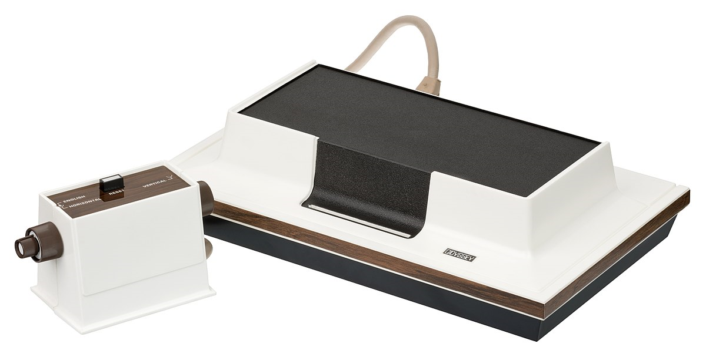

1. Games movimentaram US$ 120 bilhões em 2019. As informações são da SuperData.
2. Segundo dados da SuperData, os jogos para celular têm a maior participação de mercado em 2019, com US $ 64,4 bilhões.
3. Os jogos de PC ficaram em segundo lugar para a SuperData em 2019: US$ 29,6 bilhões.
4. Os jogos para console ficaram em terceiro lugar para a SuperData em 2019: US$ 15,4 bilhões.
5. No começo da pandemia de coronavírus, a indústria cresceu US$ 10 bilhões: o dado é da Superdata, da Nielsen.
6. O Brasil está desenvolvendo sua própria cena de criação de jogos, com 375 empresas: informação do Censo da Indústria Brasileira de Games de 2018.
7. Das empresas desenvolvedoras, 71% são microempresas, segundo o Censo da Indústria.
8. 73,4% dos brasileiros jogam jogos eletrônicos, de acordo com a Pesquisa Game Brasil (PGB) publicada neste ano.
9. Público gamer cresceu 7,1% no Brasil de 2020 em comparação a 2019, de acordo com o mesmo levantamento PGB, que ouviu cerca de seis mil pessoas.
10. A PGB indica que homens são maioria dos gamers de perfil hardcore, com 61,3% mercado. Eles jogam três vezes ou mais por semana, por cerca de três horas.
11. A PGB indica que as mulheres lideram entre os gamers casuais, com 61,9% desse público sendo feminino. Jogam até três vezes por semana por cerca de três horas.
12. Gamers brasileiros jogam 43,0% em console. Segundo dados da PGB.
13. Gamers brasileiros jogam 40,7% em PC. Segundo dados da PGB.
14. O celular é a plataforma mais utilizada pelo brasileiro para jogar, com 86,7% da preferência, de acordo com a PGB. Num país com 220 milhões de smartphones, segundo a FGV (Fundação Getúlio Vargas).
Magnavox Odyssey foi o primeiro videogame caseiro, lançado em 1972. O sistema do console é muito simples: sem cores, sem som, sem texto na tela e sem processador. A Odyssey é conhecida por seus acessórios inusitados, com vendas de aproximadamente 350.000 unidades. No centro de uma série de milhões de ações judiciais e disputas em tribunais, o sucessor desse videogame alcançou algum sucesso no Brasil na década de 1980.
A Odyssey entrou no mercado em 1972, e sua origem está diretamente relacionada ao engenheiro pioneiro Ralph Bell, conhecido como o "pai dos consoles de videogame". Em 1966, Baer começou a pesquisar e desenvolver protótipos de máquinas eletrônicas - a chamada "caixa marrom", ou traduzida livremente como "caixa marrom" - que tornava possível jogar na TV. Originalmente, a ideia era criar simuladores e recursos de treinamento para militares, mas Baer percebeu rápido que suas criações tinham óbvias aplicações no entretenimento. A Magnavox, uma fabricante americana de eletrônicos que existe até hoje, tinha uma divisão de televisores e se interessou pela ideia. A empresa comprou os protótipos de Baer e investiu na criação de um produto que permitiu aos consumidores jogar em seus aparelhos de TV.